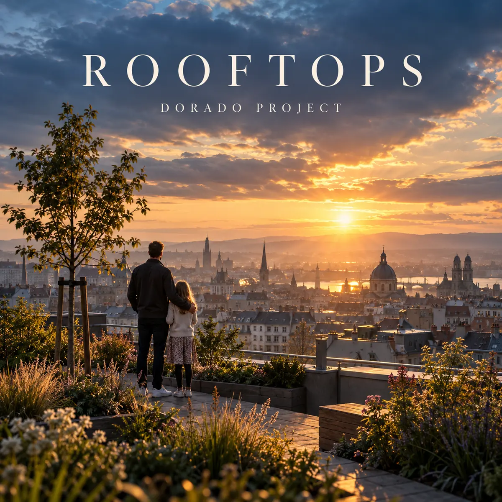

← Alle releases

SINGLE · OP SPOTIFY
Rooftops
Atmospheric arena rock / Art pop
Rooftops van Dorado Project: hoopvolle Engelstalige arena rock over de toekomst van de wereld, geschreven met een rustige opbouw, drumsolo en saxofoonsolo.
Luister op Spotify →
De toekomst is nog niet af
Een dochter vraagt haar vader hoe de wereld eruit zal zien als zij groot is. Hij deelt haar zorgen, maar ziet ook hoop in mensen die blijven bouwen, helpen en planten. Rooftops gaat over verantwoordelijkheid en vertrouwen: de toekomst ligt nog open en iedere kleine stap telt. De muzikale opzet begint klein, met zachte zang, piano en atmosferische synthesizers. Na een lange spanningsboog vormt een zelfstandige drumsolo het omslagpunt naar een groots refrein. Een uitgebreide tenorsaxofoonsolo is bedoeld als de emotionele ontlading, gevolgd door een gezamenlijke finale met livegevoel. De fotorealistische hoes toont een vader en dochter in een groene daktuin boven een stad bij zonsopkomst. Het nummer is nu te beluisteren op Spotify.
Meer van Dorado Project
Van synthpop tot rock: ontdek de andere nummers en het verhaal achter Dorado Project.
Bekijk alle nummers →